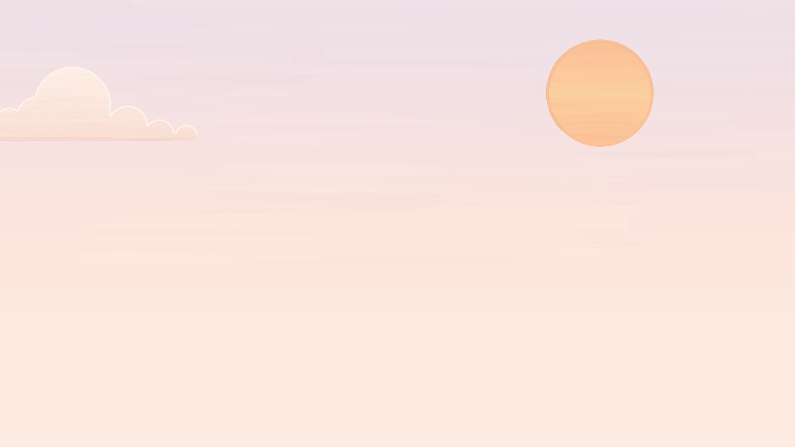
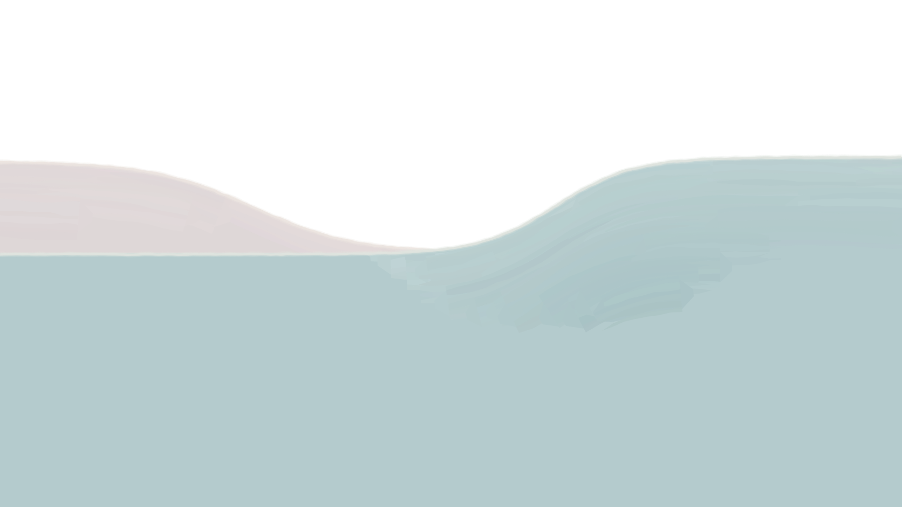
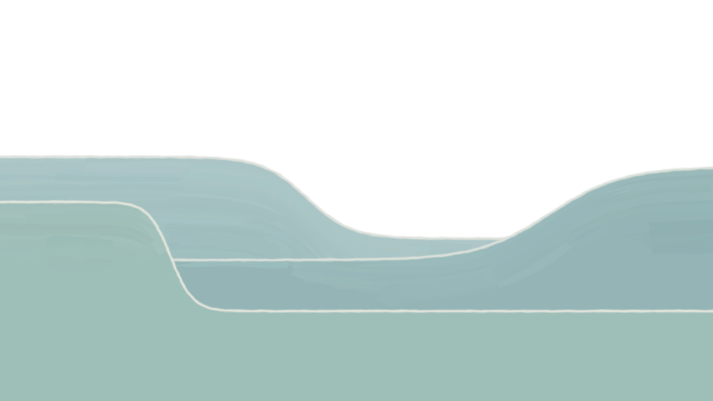
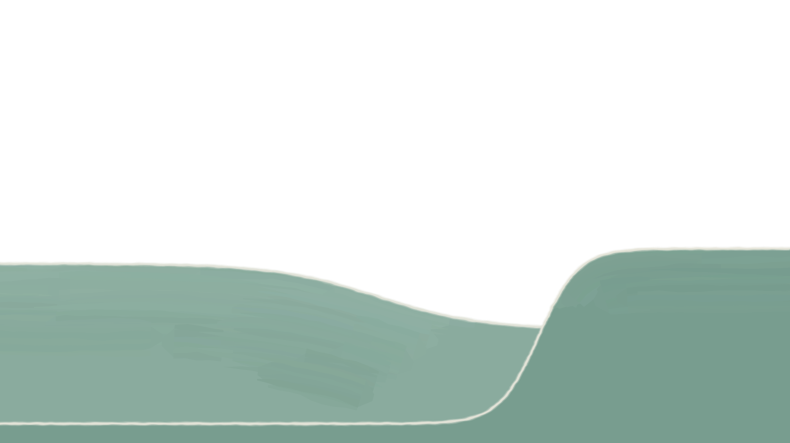
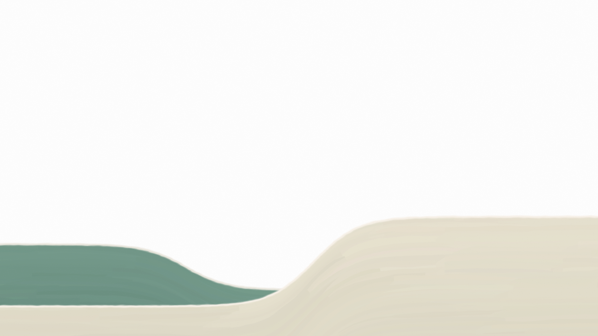

See why each student lost points.
Subsigmoid reads a class’s graded Gradescope exams and finds which skills each student is missing, and which wrong answers were just careless.





The dashboard, showing the latest uploaded exam. Every hill above is an S-curve, the shape the model fits to each question.
1
Import a graded exam
Sync from Gradescope or upload the CSV. Every rubric item counts as evidence.
2
Check the skills
AI suggests which skills each question tests. It reads the questions, never the students.
3
See gaps and slips
Each answer gets a label, and students are grouped by the skill they’re missing.